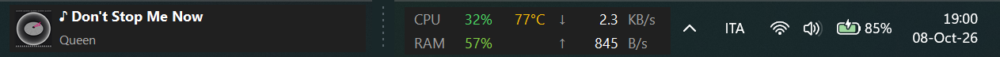
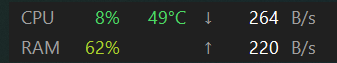
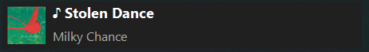

Network speed, CPU, RAM and music on your Windows taskbar
Taskbar Monitor is a small overlay that sits on the taskbar and shows what your PC is doing right now. One 25 KB file, no installer, nothing sent anywhere.

- 25 KB
- single executable
- ~50 MB
- of RAM in use
- 0
- network connections made
- MIT
- license, free to use
What it shows
Two small widgets, each with a fixed layout so numbers stay in the same place when they change.
System stats
Next to the notification area: download and upload speed, CPU load and temperature, and RAM usage. Values go from green to yellow to red as load or temperature rise.

Now playing
At the left of the taskbar: cover art, title and artist of whatever is playing in Spotify, a browser tab, VLC and other media apps. Click it to play or pause. It disappears when nothing is playing.

Details
- Hide and show. Hide both widgets from the menu and bring them back with a click on the tray icon, Ctrl + Alt + M, or by opening the app again.
- Starts with Windows, if you turn it on. Off by default.
- Stays visible when the Start menu or other flyouts open, without flicker.
- Follows your theme: light or dark taskbar, and sharp text on high-DPI screens.
- Movable. Drag the stats widget anywhere; its position is remembered.
Install
- Download
TaskbarMonitor.exefrom the latest release. - Put it in a folder you will keep, for example
C:\Tools\TaskbarMonitor\. - Double-click it. The widgets appear on the taskbar. Right-click either one to open the menu, where you can turn on Start with Windows.
SmartScreen warning. The executable is not code-signed, so Windows may say “Windows protected your PC”. Click More info, then Run anyway. If you prefer not to run a downloaded file, the whole program is one readable source file and builds with the compiler that ships with Windows. See build from source.
To remove it, turn off Start with Windows, choose Exit and delete the file. Nothing else is installed.
Where the numbers come from
| Value | Source |
|---|---|
| Network speed | Byte counters of all active network adapters, sampled every second. |
| CPU and RAM | The same Windows counters Task Manager is built on. |
| Temperature | The thermal zone reported by the system (ACPI). It is not a per-core reading, so it can differ from tools such as HWiNFO. If your PC does not expose it, the widget shows --. |
| Now playing | Windows media controls, the same ones used by the keyboard media keys and the volume flyout. |
Windows 11 no longer allows third-party toolbars on the taskbar, so Taskbar Monitor draws small borderless windows on top of it. Because of that, a widget can cover whatever sits under it, such as the Widgets button on the left.
More questions? See the FAQ.
Privacy
The app never connects to the internet and collects nothing. It stores two things on your PC: the widget position and settings under HKEY_CURRENT_USER\Software\TaskbarMonitor, and, only if you enable it, a startup entry.
Open source
The code is on GitHub under the MIT license. Bug reports and pull requests are welcome. To build it yourself you only need Windows:
git clone https://github.com/AlessandroZappatore/TaskbarMonitor.git
cd TaskbarMonitor
build.bat